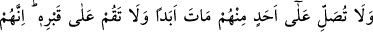
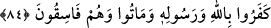

Kimse götürmez onu ipek atölyesine
Zemahşerî’nin belîğ sözlerindendir: “İşler ancak akıl sahipleri sayesinde iyi ve
düzgün olur, değirmenler ancak iğler üzerinde döner.”
84. Ve onlardan ölen birinin üzerine aslâ namaz kılma, onun kabri başında da
durma. Çünkü onlar, Allah’ı ve Rasûlü’nü inkâr ettiler ve fâsık olarak öldüler.
“Ve” Ey Muhammed! “onlardan” münâfıklardan “ölen birinin üzerine aslâ namaz
kılma” Yani onlar için asla duâ etme, af dileme! Küfür üzere ölmek sûretiyle ebediyyen
ölen münâfık bir ölü üzerine namaz kılma. Çünkü küfür üzere ölen bir kimse ebediyyen
ölmüş demektir. İkiyüzlülük üzere ölen bir münâfık, âhirette cennet nimetlerinden
faydalanmak için değil, azap çekmek için diriltilecektir. Bu da onun sanki diriltilmemiş
olması demektir.
Huzeyfe (r.a.), Rasûlullah (s.a.)’in sırdaşı idi. Rasûlullah (s.a.) bir gün ona: “Ben
sana bir sır vereceğim. Fakat bu sırrı aslâ kimseye açıklama. Falan ve falan
kimselerin cenaze namazlarını kıldırmam bana yasak edildi.” buyurdu ve bir grup
münâfığın isimlerini saydı.[228]
Rasûlullah (s.a.)’in vefâtından sonra Ömer b. Hattâb (r.a.)’ın halifeliği döneminde
münâfıklardan olduğunu zannetttiği birisi öldüğü zaman Huzeyfe’nin elini tutar ve ölenin
cenaze namazına çağırırdı. Eğer Huzeyfe kendisi ile birlikte gelirse Hz. Ömer o ölünün
namazını kıldırırdı. Eğer Huzeyfe elini elinden çekerse ölen kimsenin namazını
kıldırmazdı.
“Onun kabri başında da durma.” onu defnetmek ya da ziyaret ve duâ etmek için
kabri başında durma. Peygamber (a.s.), ölü defnedildiği zaman, kabrinin başında durur
ve onun için duâ ederdi.
“Çünkü onlar, Allah’ı ve Rasûlü’nü inkâr ettiler.” Bu ifade yasaklanan şeyin illetini
açıklamaktadır. Şöyle ki ölü için af dilemek, gidip kabrinin başında durmak, ölünün
akıbetinin iyi olmasını Allah’tan istemek için yapılır. Münâfıklar hakkında Allah’tan
böyle bir istekte bulunmak mümkün değildir. Çünkü onlar hayatları boyunca Allah’ı ve
Rasûlü’nü inkar etmişlerdir.
Hâfız (k.s.) der ki: